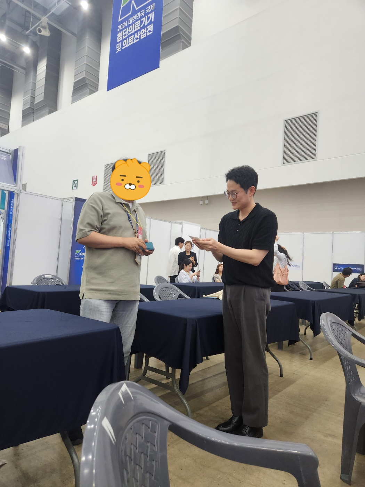
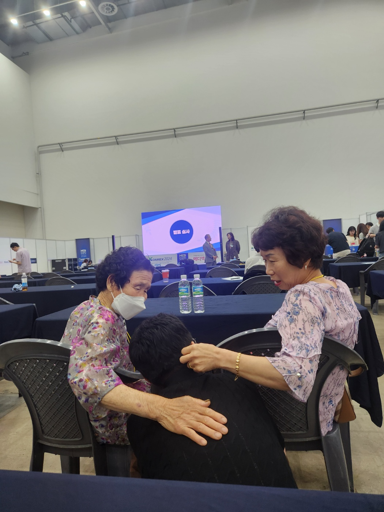
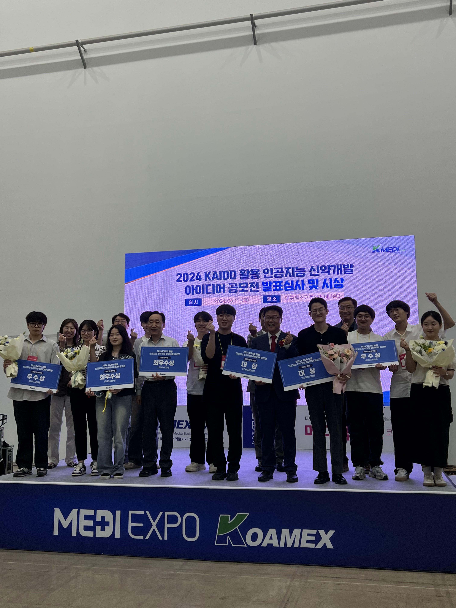
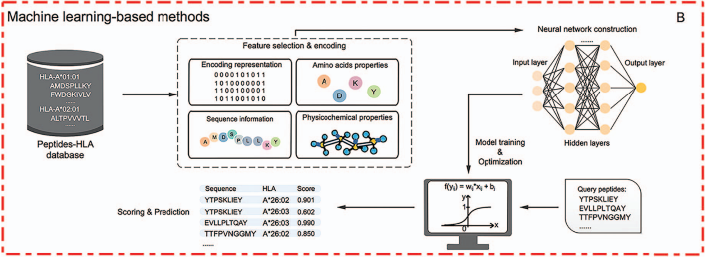
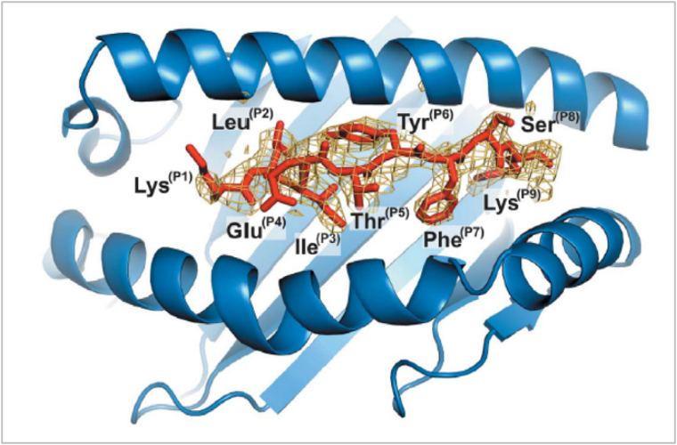
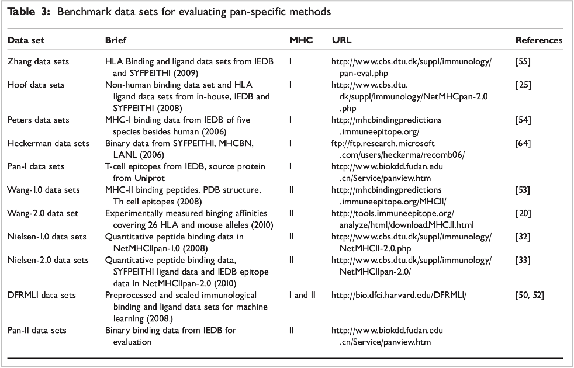
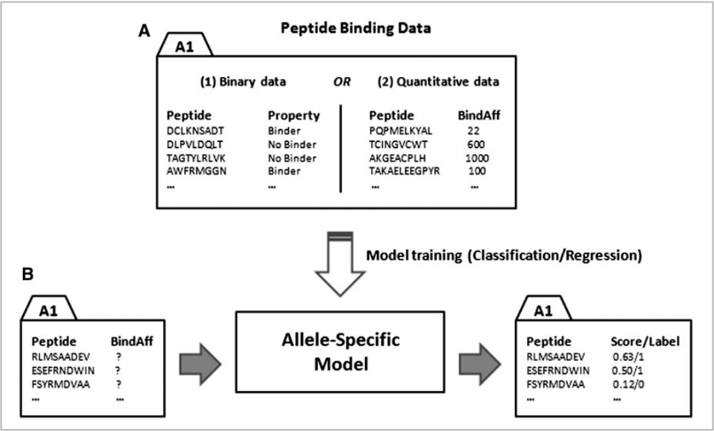
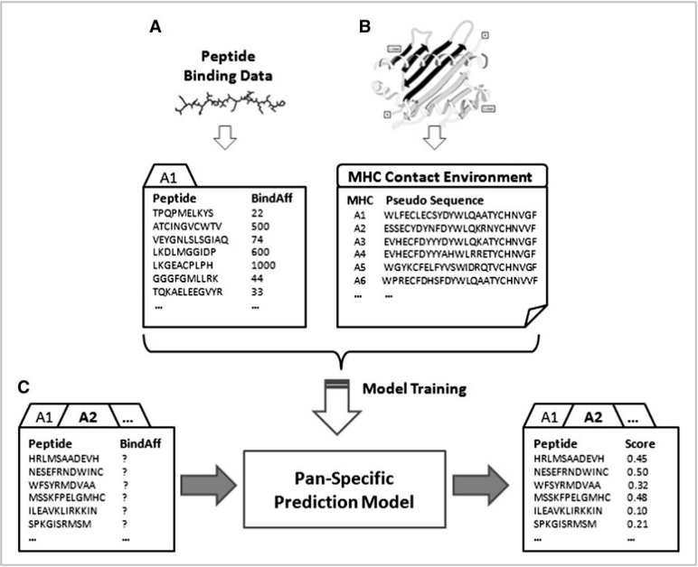
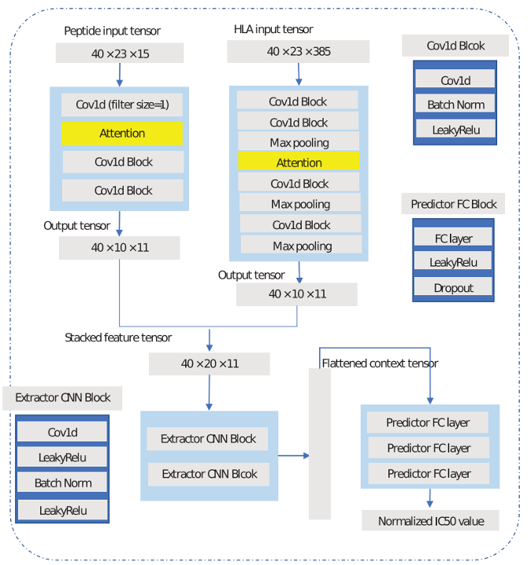

Overview
A month-long, self-directed detour outside my formal domain: could I learn enough computational immunology from scratch to contribute something real to early-stage drug discovery? I modeled peptide-protein binding affinity to help shrink the drug candidate search space.
Using BLOSUM62 matrix encoding for peptide/protein sequence features and DeepAttentionPan for binding prediction, the project won the Grand Prize at the 2024 AI Drug Discovery Idea Competition hosted by K-Medihub — with one of the judges proposing commercialization on the spot. The work also led to a Ph.D. admissions offer from a structural biology professor in Boston.
Results
 Presenting to judges
Presenting to judges

Business proposal
Award ceremony
Award ceremonyThe binding problem

The general ML pipeline: encode, train, score new peptides
A 9-mer peptide (P1–P9) sitting in the groove formed by an MHC molecule's two alpha helices. Whether a given peptide binds tightly enough to trigger an immune response is exactly what the model predicts.Dataset

A decade-plus of accumulated peptide binding and MHC ligand data across public benchmark sets, the raw material that made a computational approach possible in the first placeNone of this was learnable from a handful of wet-lab measurements. It took years of MHC-peptide immune response data accumulating across labs, consolidated into benchmark sets like these, before there was enough signal for a computational, in-silico approach to substitute for running the binding assay in-vitro every time.
Allele-specific vs. pan-specific

Allele-specific — one model per MHC allele, trained only on that allele's peptide binding data
Pan-specific — one model trained across many alleles at once, using each MHC's pseudo-sequence as additional context so it generalizes to alleles it wasn't directly trained onMHC genes are the most polymorphic in the human genome. Training a separate allele-specific model for each one is both time- and cost-consuming, and there will always be rare alleles with too little data to train on directly. A pan-specific model sidesteps that by learning binding as a function of the peptide plus the MHC's own sequence context, so it can still make a reasonable prediction for an allele it has seen little or no direct data for.
Model architecture — DeepAttentionPan

Peptide and HLA sequences, each BLOSUM62-encoded, run through parallel CNN + attention branches before being fused and scoredFour stages do the actual work: